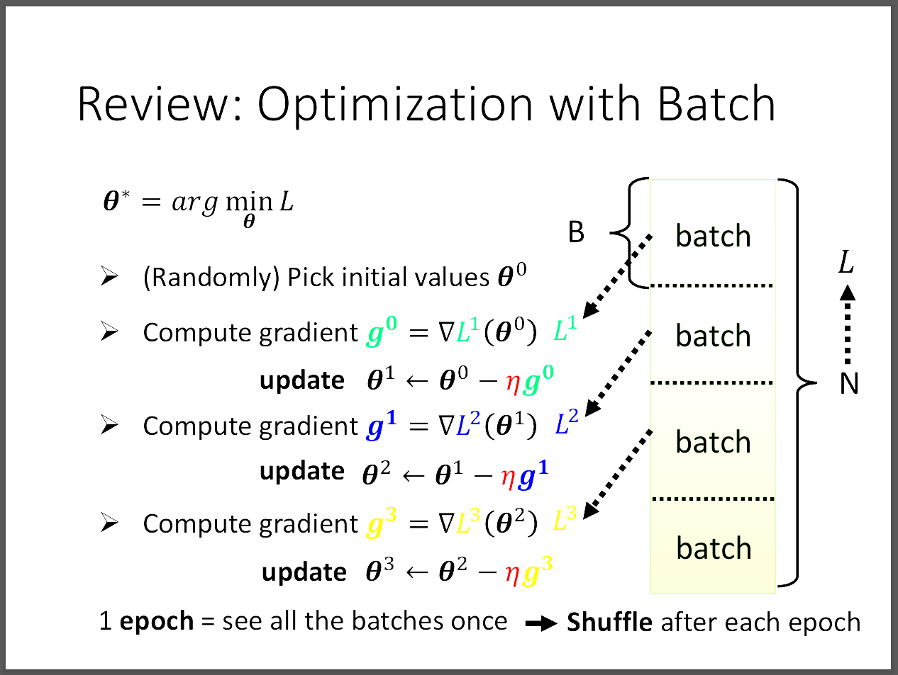
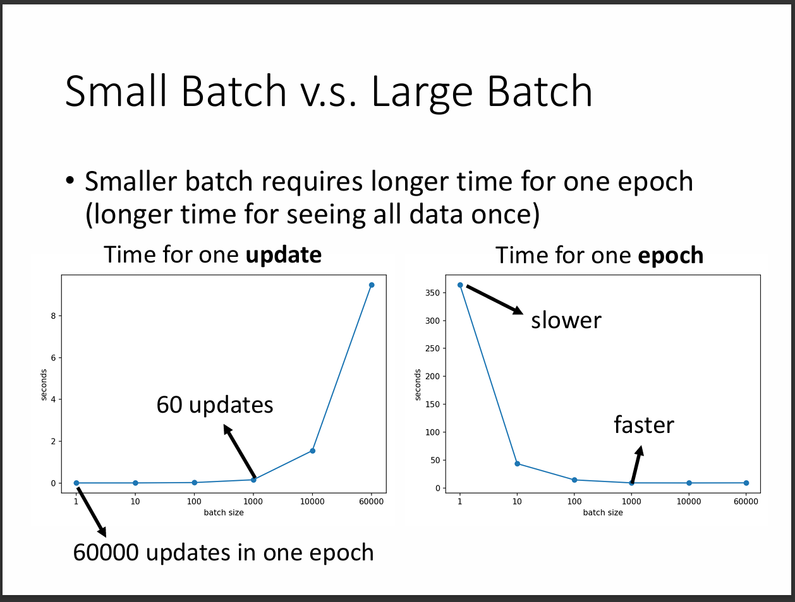
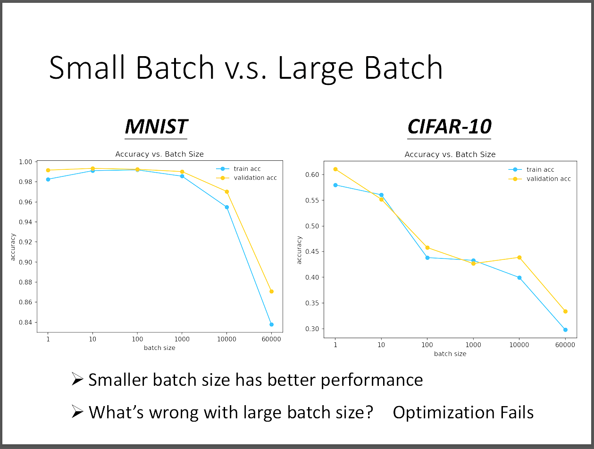
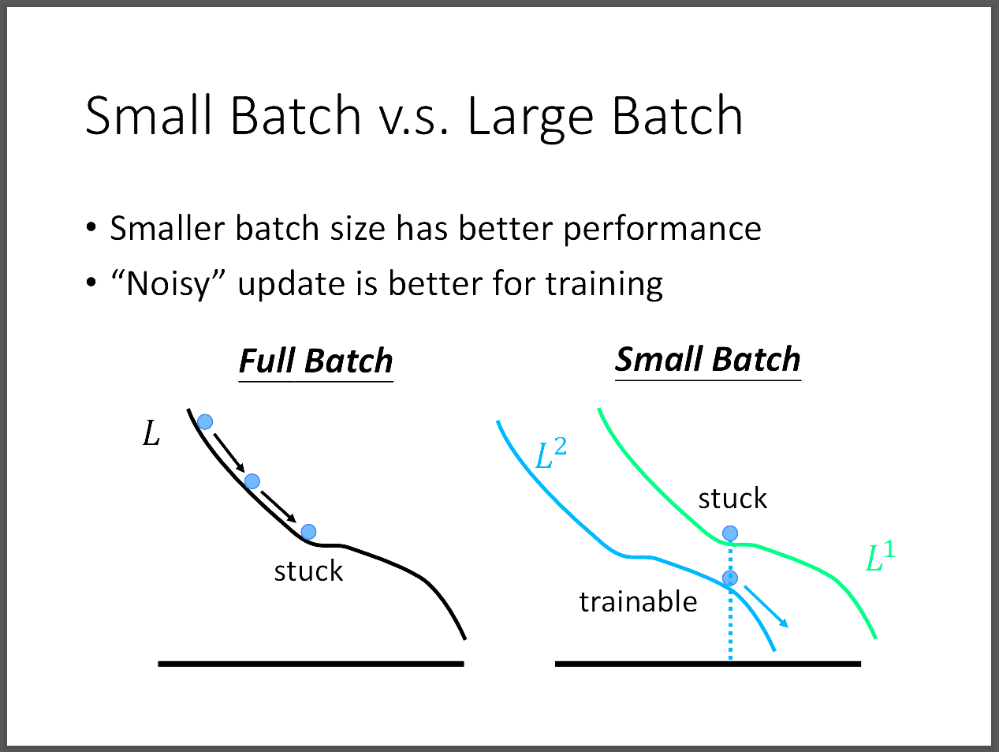
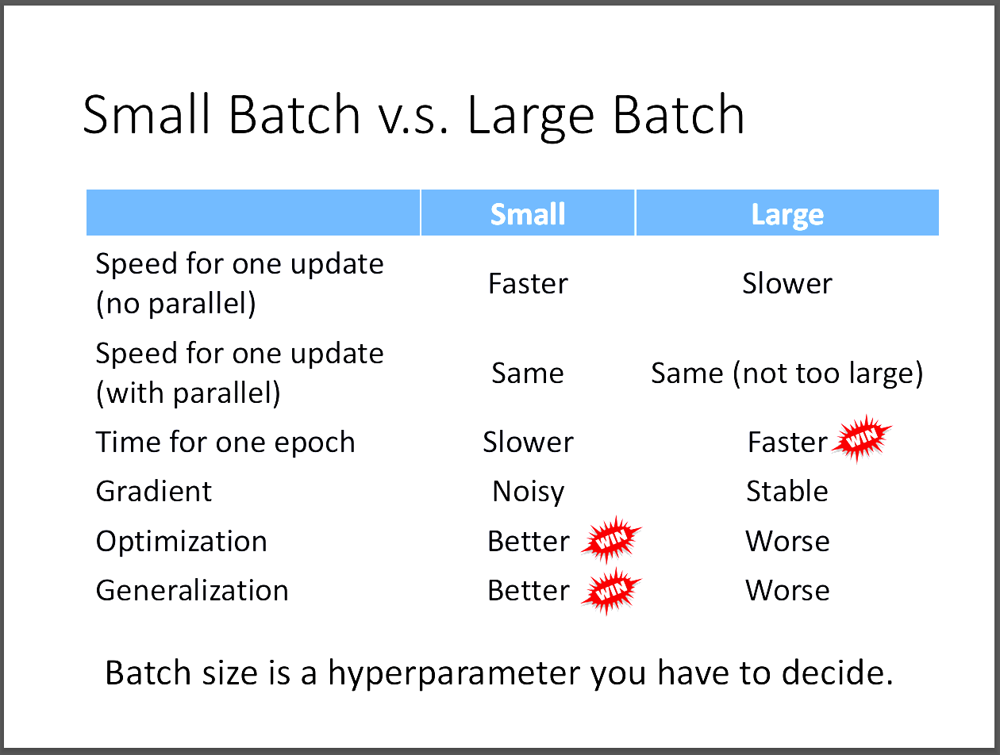
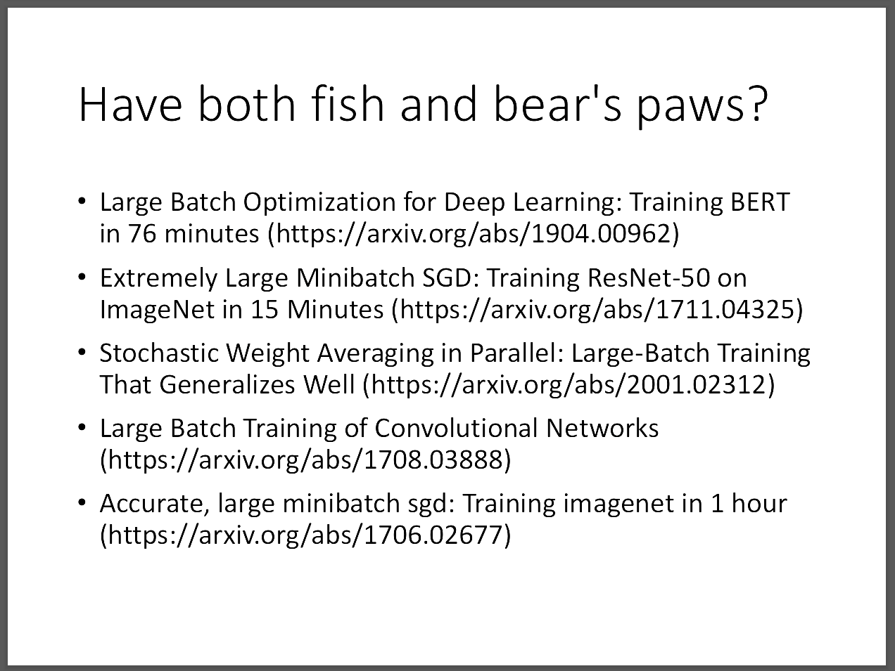
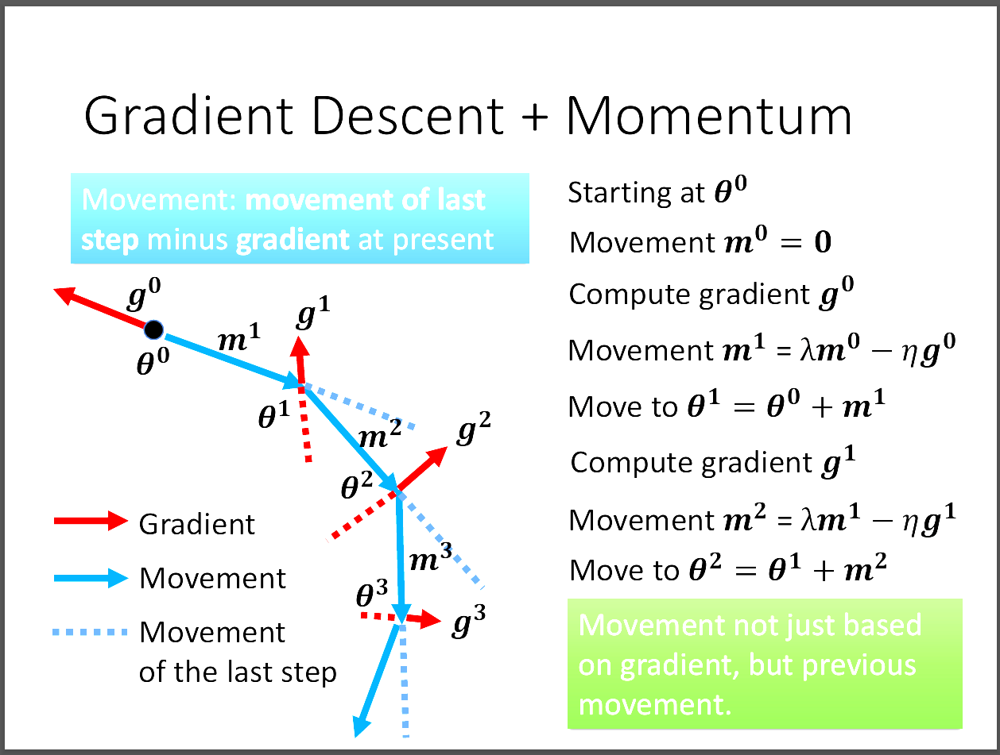

台大教授李宏毅老師[機器學習概論2021][機器學習基本概念]
📘 文章探討
1️⃣Small Batch v.s Large Batch
2️⃣Momentum
3️⃣Reference
1️⃣ Small Batch v.s Large Batch

我們回顧之前所講的Batch，每次訓練的時候，對loss function微分，
一次是拿一個Batch進行，然後依序更新gradient以及最好的參數。
當資料集中的每個batch都用完之後，稱為一次epoch，然後再進行多次epoch稱為一次完整的訓練。
需要特別注意的是，我們會在每一次epoch前對資料集的batch進行shuffle，增加隨機性。

因為小的batch size雖然每次update參數所需要看的資料量少而所需時間少，
但是要去考量到可能造成batch的數量很多，導致訓練一次(epoch)所需的時間很大。
相反的大的batch size所花的時間就相反，因此開始好奇到底怎樣的batch size所花時間較短。
我們要考量到GPU有平行運算的能力，可以發現其實兩者並沒有說誰花時間一定比較久。
大約在batch size=1000的時候所花時間較短。

然而我們會發現，似乎大的batch size表現會比小的batch size來得更糟，究竟是為什麼?

其實就是optimization上出現問題，從圖片中我們可以看到，若我們用gradient descent，
當卡在一個critical point時，小batch size雖然noisy，但不是說就比較差，
反而有預想不到的效果。也就是當前一次update參數用L1卡住了，
因為多次update的關係，所以我們可以得到很多得loss function去optimize參數，
相比大的batch size而言，更有機會可以使得訓練不卡住，反正下一次update參數的時候，
我們就得到一個新的loss function去訓練。不只在train時很好，test的效果也很好。
以下附一張比較表。

許多研究也在探討究竟能不能在保有大batch size的訓練時間優勢，
又得到小batch size在data上表現好的優勢，很適合把他當做一個論文主題。

2️⃣Momentum

我們可以把momentum想成他是前面所有gradient的總和。
每次在更新movement的時候是單純往gradient的反方向走，但若是用前面的動能，
或許就可以跳脫出local minima。參考方向就是除了更新的gradient的反方向，
還考慮上一個movement的方向，然後用平行四邊形法走出新的movement。